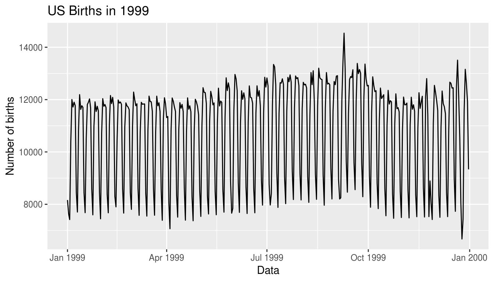

Chapter 11 Inference for Regression
Needed packages
Let’s load all the packages needed for this chapter (this assumes you’ve already installed them). Read Section 2.3 for information on how to install and load R packages.
library(ggplot2)
library(dplyr)
library(moderndive)
library(infer)11.1 Regression refresher
Let’s first head back to reminding ourselves of the University of Texas student evaluations analysis in Section 6.1. Let’s begin by looking at the evals_ch6 data frame that selected a subset of variables from the evals data frame in the moderndive package.
evals_ch6 <- evals %>%
select(ID, score, bty_avg, age)
glimpse(evals_ch6)Observations: 463
Variables: 4
$ ID <int> 1, 2, 3, 4, 5, 6, 7, 8, 9, 10, 11, 12, 13, 14, 15, 16, 17, 18…
$ score <dbl> 4.7, 4.1, 3.9, 4.8, 4.6, 4.3, 2.8, 4.1, 3.4, 4.5, 3.8, 4.5, 4…
$ bty_avg <dbl> 5.00, 5.00, 5.00, 5.00, 3.00, 3.00, 3.00, 3.33, 3.33, 3.17, 3…
$ age <int> 36, 36, 36, 36, 59, 59, 59, 51, 51, 40, 40, 40, 40, 40, 40, 4…In Chapter 6, we investigated the relationship between student evaluation ratings (score) and the beauty rating (bty_avg). We saw there that there was a weakly positive correlation between the two variables as shown in the plot below. Note the use of the regression line as well in blue that attempts to summarize this linear relationship between the two variables.
ggplot(evals_ch6, aes(x = bty_avg, y = score)) +
geom_point() +
labs(x = "Beauty Score", y = "Teaching Score",
title = "Relationship between teaching and beauty scores") +
geom_smooth(method = "lm", se = FALSE)FIGURE 11.1: Relationship with regression line
Looking at this plots again, you might be asking “But is that line really that positive in its slope?” It does increase from left to right as the bty_avg variable increases, but by how much? To get to this information, we can use the lm() function to determine the necessary values that comprise the defining regression equation. Recall the use of the get_regression_table() function in the moderndive package to better summarize the results of this regression fit as well.
# Fit regression model:
score_model <- lm(score ~ bty_avg, data = evals_ch6)
# Get regression table:
get_regression_table(score_model)# A tibble: 2 x 7
term estimate std_error statistic p_value lower_ci upper_ci
<chr> <dbl> <dbl> <dbl> <dbl> <dbl> <dbl>
1 intercept 3.88 0.076 50.961 0 3.731 4.03
2 bty_avg 0.067 0.016 4.09 0 0.035 0.09911.2 Interpretation of regression table results
In Chapter 6 we focused on the left-most column of this resulting summary of score_model using get_regression_table(). Remember the interpretation here of the 0.067 value:
For every increase of one unit in beauty rating, there is an associated increase, on average, of 0.067 units of evaluation score.
Thus, the slope value quantifies the relationship between the y variable of score and the x variable of bty_avg as a single statistic/point estimate from our sample of student evaluations.
We also discussed the intercept value of \(b_0\) = 3.88 and its lack of practical interpretation since the range of possible beauty scores does not include 0. Let’s now shift to focus on the remaining columns of std_error, statistic, p_value, and the two columns related to confidence intervals (lower_ci and upper_ci) that were not discussed in Chapter 6. Given we’ve just mentioned the lack of interpretation for the intercept value, we’ll focus on the second row of the table corresponding to the slope of the regression equation.
11.2.1 Standard error
Recall the definition of standard error given in Chapter 8:
The standard error is the standard deviation of any point estimate from a sampling scenario.
So what does this mean in this scenario focusing on the sample slope statistic of \(b_1\) = 0.067. This value is just one possible statistic from one sample of students evaluations at the University of Texas. If a different sample was collected for the two variables of bty_avg and score, we may see different results. If this was done over and over again, we could quantify just how much deviation one would expect with a standard deviation of the sampling distribution for the point estimate \(b_1\). So in our case, we can expect about 0.016 units of deviation on the bty_avg slope variable. Recall that estimate and std_error play a key role in helping us to make an educated guess about possible values for the unknown population slope \beta_1 relating all University of Texas student evaluation scores in the year of the study to the beauty score of all faculty.
11.2.2 Statistic
The statistic column in the regression table corresponds to a standardized statistic. This is similar to what was done in Subsection 10.6.1 when a \(t\)-score was computed. To determine the statistic entry for slope, we can divide the estimate value by its corresponding std_error value to create the \(t\)-score. (Note that there will be a bit of rounding error here if the calculation is done with these rounded table values.) This entry is useful in determining the statistical significance of the \(b_1\) value by determining how extreme it is after standardization in the corresponding p_value that follows.
11.2.3 p-value
The p_value entry here corresponds to how extreme the entry of 4.09 is when compared to the appropriate \(t\) distribution. With the p_value being 0 with rounding, we can conclude that the sample slope of 0.067 is statistically greater than 0. In other words, we have evidence that the relationship between beauty score and student evaluation score is positive.
An extra caveat here is that this analysis of statistical significance via the hypothesis test using the \(t\)-statistic is only valid if some conditions are met. We’ll see more about this in Section 11.3.
11.2.4 Confidence interval
The final rightmost entries in the table signify a range of possible values for the population slope \beta_1 referring to the linear relationship between beauty score and student evaluation score in the population. Given that our hypothesis test above told us we had evidence of a positive slope, we should be happy to see the entries for lower_ci and upper_ci are both greater than 0.
To obtain these two values, we can use an approach similar to what was done in Subsection 9.4.4. Remember here we are using the theory-based method of a standardized statistic instead of a simulation-based method. We’ll compare these two results in Section 11.4. Recall that if we want to compute a 95% confidence interval around our point estimate, we can use the following formula:
\[point\_estimate \pm 2 * standard\_error\]
This confidence interval also is only valid if the conditions discussed in Section 11.3 are met. Doing the multiplication and subtraction prescribed in the formula by plugging in the other relevant entries from the slope row gives us the resulting confidence interval of \((0.035, 0.099)\).
11.3 Conditions for inference with regression
In order for inference to be valid with linear regression, we must check for four conditions to be met. Note the first four letters of the conditions as highlighted in bold below. This can serve as a nice reminder of what to check whenever linear regression is performed.
- Linearity of relationship between variables
- Independence of residuals
- Normality of residuals
- Equality of variance
These conditions can mostly be checked via appropriate data visualizations. There are statistical tests that can also be done to further check for this, but here we will focus on the simpler style of evaluating plots.
11.3.1 Linearity of relationship
We’ve already checked for this with our original scatterplot in Figure 11.1. While the plot didn’t show a clear example of a linear relationship in that there was some clear deviation from a regression line fit throughout the plot, it also didn’t show a different kind of non-linear relationship either. Let’s dig further into the other conditions to see how they stack up.
11.3.2 Independence of residuals
The next three conditions all refer to investigation of the residuals. Investigating any such patterns is known as residual analysis. Recall that residuals can be thought of as the error or the “lack-of-fit” between the observed value \(y\) and the fitted value \(\widehat{y}\) on the blue regression line in Figure 11.1. Ideally when we fit a regression model, we’d like there to be no systematic pattern to these residuals. We’ll be more specific as to what we mean by no systematic pattern when we see Figure 11.1, but let’s keep this notion imprecise for now.
We’ll perform our residual analysis in two ways:
- Creating a scatterplot with the residuals on the \(y\)-axis and the original explanatory variable \(x\) on the \(x\)-axis.
- Creating a histogram of the residuals, thereby showing the distribution of the residuals.
First, recall in Figure 6.6 in Chapter 6 we created a scatterplot. This is again shown below and has the following characteristics:
- on the vertical axis we had the teaching score \(y\) and
- on the horizontal axis we had the beauty score \(x\).
FIGURE 11.2: Example of observed value, fitted value, and residual
Instead, in Figure 11.3 below, let’s create a scatterplot where
- On the vertical axis we have the residual \(y-\widehat{y}\) instead
- On the horizontal axis we have the beauty score \(x\) as before:
# Get data
evals_ch6 <- evals %>%
select(score, bty_avg, age)
# Fit regression model:
score_model <- lm(score ~ bty_avg, data = evals_ch6)
# Get regression table:
get_regression_table(score_model)# A tibble: 2 x 7
term estimate std_error statistic p_value lower_ci upper_ci
<chr> <dbl> <dbl> <dbl> <dbl> <dbl> <dbl>
1 intercept 3.88 0.076 50.961 0 3.731 4.03
2 bty_avg 0.067 0.016 4.09 0 0.035 0.099# Get regression points
regression_points <- get_regression_points(score_model)ggplot(regression_points, aes(x = bty_avg, y = residual)) +
geom_point() +
labs(x = "Beauty Score", y = "Residual") +
geom_hline(yintercept = 0, col = "blue", size = 1)FIGURE 11.3: Plot of residuals over beauty score
You can think of Figure 11.3 as Figure 11.2 but with the blue line flattened out to \(y=0\). Does it seem like there is no systematic pattern to the residuals? This question is rather qualitative and subjective in nature, thus different people may respond with different answers to the above question. However, it can be argued that there isn’t a drastic pattern in the residuals.
We do have extra information here that may lead us to question the independence of residuals further: The same professors exist multiple times in the data set in that multiple rows of the data set correspond to some of the same professors. Different courses that the professors taught were included in the analyses. Therefore, the residual in one observation will have a dependent relationship with another row breaking the independence assumption of the residuals.
Note: As is often the case with regression analysis in the real-world, it can be difficult for the assumptions to be met exactly. We as authors advocate for clarity of interpretation and letting the stakeholders of analyses know about any shortcomings of a model as needed. Here as a preliminary analysis teaching the topics, we will continue on with testing the other conditions. A more valid and precise analysis would incorporate these dependencies between rows and instructors. This topic can get to the advanced stages quickly, so we have decided to omit any further discussion here.
11.3.3 Normality of residuals
Let’s now get a little more precise in our definition of no systematic pattern in the residuals. Ideally, the residuals should behave randomly. In addition,
- the residuals should be on average 0. In other words, sometimes the regression model will make a positive error in that \(y - \widehat{y} > 0\), sometimes the regression model will make a negative error in that \(y - \widehat{y} < 0\), but on average the error is 0.
- the residuals should have the characteristic normal shape.
The simplest way to check for this condition of the normality of the residuals is to look at a histogram.
ggplot(regression_points, aes(x = residual)) +
geom_histogram(binwidth = 0.25, color = "white") +
labs(x = "Residual")FIGURE 11.4: Histogram of residuals
This histogram seems to indicate that we have more positive residuals than negative. Since the residual \(y-\widehat{y}\) is positive when \(y > \widehat{y}\), it seems our fitted teaching score from the regression model tends to underestimate the true teaching score. This histogram has a slight left-skew in that there is a long tail on the left. Another way to say this is this data exhibits a negative skew. Is this a problem? Again, there is a certain amount of subjectivity in the response. In the authors’ opinion, while there is a slight skew/pattern to the residuals, it isn’t a large concern. On the other hand, others might disagree with our assessment. Here are examples of an ideal and less than ideal pattern to the residuals when viewed in a histogram:
FIGURE 11.5: Examples of ideal and less than ideal residual patterns
11.3.4 Equality of variance
Lastly, to test for the E part of LINE in our conditions check, the value and spread of the residuals should not depend on the value of \(x\).
In Figure 11.6 below, we display some hypothetical examples where there are drastic patterns to the residuals. In Example 1, the value of the residual seems to depend on \(x\): the residuals tend to be positive for small and large values of \(x\) in this range, whereas values of \(x\) more in the middle tend to have negative residuals. In Example 2, while the residuals seem to be on average 0 for each value of \(x\), the spread of the residuals varies for different values of \(x\); this situation is known as heteroskedasticity.
FIGURE 11.6: Examples of less than ideal residual patterns
Do we see this kind of behavior in our student evaluation versus beauty score example? Let’s look at the plot again in Figure 11.3 removing the highlighting of a single residual.
FIGURE 11.7: Plot of residuals over beauty score
As we look at this plot, we don’t see the noticeable patterns shown in Figure 11.6. It doesn’t have the fan-like pattern of Example 2 or the bowl-like pattern of Example 1. The residuals are pretty much scattered in similar ways as we look from small beauty score values on the left to larger beauty score values on the right.
Learning check
(LC11.1) Continuing with our regression using age as the explanatory variable and teaching score as the outcome variable, use the get_regression_points() function to get the observed values, fitted values, and residuals for all 463 instructors. Perform a residual analysis and look for any systematic patterns in the residuals. Ideally, there should be little to no pattern.
11.3.5 Summary
The conditions for inference in regression problems are a key part of regression analysis that are of vital importance to the processes of confidence intervals and hypothesis tests. We also saw that there is a level of subjectivity in evaluating plots so you may be asking “What do I do when conditions aren’t clearly met?”. We as authors are of the opinion that discussion of these shortcomings goes a long way in helping others to understand your analyses. You won’t always have ideal results but regression is a powerful technique that can do some wondrous things with data. But if conditions are violated badly, regression will just as much put you in the “garbage in, garbage out” situation. We recommend being vigilant about checking these conditions and you’ll get better with practice on how to discuss the results of the analyses.
11.4 Simulation-based inference for regression
11.4.1 Formula for the standard error of the slope statistic
The discussion of the regression table results in Section 11.2 were done using the traditional theory-based analyses and a \(t\)-statistic. There are formulas to compute the standard error as well as given in the table there. Let’s review that table again here:
# Fit regression model:
score_model <- lm(score ~ bty_avg, data = evals_ch6)
# Get regression table:
get_regression_table(score_model)# A tibble: 2 x 7
term estimate std_error statistic p_value lower_ci upper_ci
<chr> <dbl> <dbl> <dbl> <dbl> <dbl> <dbl>
1 intercept 3.88 0.076 50.961 0 3.731 4.03
2 bty_avg 0.067 0.016 4.09 0 0.035 0.099Since we didn’t do any bootstrapping or simulation-based procedures to get the value of 0.016 for the standard error, how was this number computed? What did R do behind the scenes? Well, there’s a formula for the standard error. As we’ve seen with other standard error formulas \(n\) and the square root function play a role. Memorizing this formula isn’t the important part here. Seeing how the formula compares to the one given in the denominator of the \(t\)-statistic formula in Section 10.6.1 is helpful here. From the theory-based perspective, the standard error of the slope statistic is denoted as \(s_{b_1}\) and is given by
\[s_{b_1} = \dfrac{\dfrac{s_y}{s_x} \cdot \sqrt{1-r^2}}{\sqrt{n-2}}\]
As with many formulas in statistics, there’s a lot going on here so let’s first break down what each symbol represents:
- \(s_y\) is the sample standard deviation for the response variable
score - \(s_x\) is the sample standard deviation for the explanatory variable
bty_avg - \(r\) is the sample correlation coefficient between
scoreandbty_avg. This was computed as 0.187 in Chapter 6. - \(n\) is the number of pairs of points in the
evals_ch6data frame (463).
To put into words, the standard error depends on the relationship between how the response variable varies and the explanatory variable varies in the \(s_y / s_x\) term. Next it looks into the relationship of how the two variables relate to each other in the \(\sqrt{1-r^2}\) term. Lastly, the standard error depends on the “sample size”, which here corresponds to how many observations are in the data set.
11.4.2 Hypothesis testing using infer
We can also use the concept of permuting to determine the standard error of our null distribution and conduct a hypothesis test for a population slope. Let’s see how the results above using the theoretical procedures on the student evaluations of faculty data compares to if we used the infer package procedures instead.
We’ll begin in the basic regression setting to test to see if we have evidence that a statistically significant positive relationship exists between teaching and beauty scores for the University of Texas professors. As we did in Chapter 6, teaching score will act as our outcome/response variable and bty_avg will be our explanatory variable. We will set up this hypothesis testing process as we have each before via the “There is Only One Test” diagram in Figure 10.14 using the infer package.
11.4.3 Data
Our data is stored in evals and we are focused on the measurements of the score and bty_avg variables there. Note that we don’t choose a subset of variables here since we will specify() the variables of interest using infer.
evals %>%
specify(score ~ bty_avg)Response: score (numeric)
Explanatory: bty_avg (numeric)
# A tibble: 463 x 2
score bty_avg
<dbl> <dbl>
1 4.7 5
2 4.100 5
3 3.9 5
4 4.8 5
5 4.600 3
6 4.3 3
7 2.8 3
8 4.100 3.333
9 3.4 3.333
10 4.5 3.16700
# … with 453 more rows11.4.4 Test statistic \(\delta\)
Our test statistic here is the sample slope coefficient that we denote with \(b_1\).
11.4.5 Observed effect \(\delta^*\)
We can use the specify() %>% calculate() shortcut here to determine the slope value seen in our observed data:
slope_obs <- evals %>%
specify(score ~ bty_avg) %>%
calculate(stat = "slope")The calculated slope value from our observed sample is \(b_1 = 0.067\).
11.4.6 Model of \(H_0\)
We are looking to see if a positive relationship exists so \(H_A: \beta_1 > 0\). Our null hypothesis is always in terms of equality so we have \(H_0: \beta_1 = 0\). In other words, when we assume the null hypothesis is true, we are assuming there is NOT a linear relationship between teaching and beauty scores for University of Texas professors.
11.4.7 Simulated data
Now to simulate the null hypothesis being true and recreate how our sample was created, we need to think about what it means for \(\beta_1\) to be zero. If \(\beta_1 = 0\), we said earlier that there is no relationship between the teaching and beauty scores. If there is no relationship, then any one of the teaching score values could have just as likely occurred with any of the other beauty score values instead of the one that it actually did fall with. We, therefore, have another example of permuting in our simulating of data under the null hypothesis.
Tactile simulation
We could use a deck of 926 note cards to create a tactile simulation of this permuting process. We would write the 463 different values of beauty scores on each of the 463 cards, one per card. We would then do the same thing for the 463 teaching scores putting them on one per card.
Next, we would lay out each of the 463 beauty score cards and we would shuffle the teaching score deck. Then, after shuffling the deck well, we would disperse the cards one per each one of the beauty score cards. We would then enter these new values in for teaching score and compute a sample slope based on this permuting. We could repeat this process many times, keeping track of our sample slope after each shuffle.
11.4.8 Distribution of \(\delta\) under \(H_0\)
We can build our null distribution in much the same way we did in Chapter 10 using the generate() and calculate() functions. Note also the addition of the hypothesize() function, which lets generate() know to perform the permuting instead of bootstrapping.
null_slope_distn <- evals %>%
specify(score ~ bty_avg) %>%
hypothesize(null = "independence") %>%
generate(reps = 10000) %>%
calculate(stat = "slope")visualize(null_slope_distn) +
shade_p_value(obs_stat = slope_obs, direction = "greater")
In viewing the distribution above with shading to the right of our observed slope value of 0.067, we can see that we expect the p-value to be quite small. Let’s calculate it next using a similar syntax to what was done with shade_p_value().
11.4.9 The p-value
null_slope_distn %>%
get_pvalue(obs_stat = slope_obs, direction = "greater")# A tibble: 1 x 1
p_value
<dbl>
1 0Since 0.067 falls far to the right of this plot beyond where any of the histogram bins have data, we can say that we have a \(p\)-value of 0. We, thus, have evidence to reject the null hypothesis in support of there being a positive association between the beauty score and teaching score of University of Texas faculty members.
Recall that we came to a similar \(p\)-value and conclusion when looking at the theory-based approach given in the get_regression_table(score_model) table:
# A tibble: 2 x 7
term estimate std_error statistic p_value lower_ci upper_ci
<chr> <dbl> <dbl> <dbl> <dbl> <dbl> <dbl>
1 intercept 3.88 0.076 50.961 0 3.731 4.03
2 bty_avg 0.067 0.016 4.09 0 0.035 0.099When the conditions are met and the null distribution has the characteristic bell shape, we are likely to see similar results between the simulation-based and theoretical results. In the next subsection, we’ll compare the confidence interval results using bootstrapping and the theoretical results given in the regression table.
Learning check
(LC11.2) Repeat the inference above but this time for the correlation coefficient instead of the slope. Note the implementation of stat = "correlation" in the calculate() function of the infer package.
11.4.10 Bootstrapping for the regression slope
With the \(p\)-value calculated as 0 in the hypothesis test above, we can next determine just how strong of a positive slope value we might expect between the variables of teaching score and beauty score (bty_avg) for University of Texas faculty using bootstrapping. Recall the infer pipeline above to compute the null distribution. This assumes the null hypothesis is true that there is no relationship between teaching score and beauty score using the hypothesize() function.
null_slope_distn <- evals %>%
specify(score ~ bty_avg) %>%
hypothesize(null = "independence") %>%
generate(reps = 10000, type = "permute") %>%
calculate(stat = "slope")To further reinforce the process being done in the pipeline, we’ve added the type argument to generate(). This is automatically added based on the entries for specify() and hypothesize() but it provides a useful way to check to make sure generate() is created the samples in the desired way. In this case, we permuted the values of one variable across the values of the other 10,000 times and calculated a "slope" coefficient for each of these 10,000 generated samples.
If instead we’d like to get a range of plausible values for the true slope value, we can use the process of bootstrapping:
bootstrap_slope_distn <- evals %>%
specify(score ~ bty_avg) %>%
generate(reps = 10000, type = "bootstrap") %>%
calculate(stat = "slope")Here, bootstrapping is done on the row level as was first done in Subsection 9.6.3. Thus, the orignal pairs of points are linked together and may be repeated with each resample.
bootstrap_slope_distn %>% visualize()
Next we can use the get_ci() function to determine the confidence interval. Let’s do this in two different ways obtaining 99% confidence intervals. Remember that these denote a range of plausible values for an unknown true population slope parameter regressing teaching score on beauty score.
percentile_slope_ci <- bootstrap_slope_distn %>%
get_ci(level = 0.99, type = "percentile")
percentile_slope_ci# A tibble: 1 x 2
`0.5%` `99.5%`
<dbl> <dbl>
1 0.0228716 0.110240se_slope_ci <- bootstrap_slope_distn %>%
get_ci(level = 0.99, type = "se", point_estimate = slope_obs)
se_slope_ci# A tibble: 1 x 2
lower upper
<dbl> <dbl>
1 0.0219981 0.111276With the bootstrap distribution being close to symmetric, it makes sense that the two resulting confidence intervals are similar. Note that both are a bit wider than the \((0.035, 0.099)\) interval that theory would have predicted.
11.4.11 Additional resources
An R script file of all R code used in this chapter is available here.
11.4.12 What’s to come
You’ve now concluded the last major part of the book on “Statistical Inference via infer.” The closing chapter concludes with a case study on house prices in Seattle, Washington in the US. You’ll see there how the principles in this book can apply to help you be a great storyteller with data!